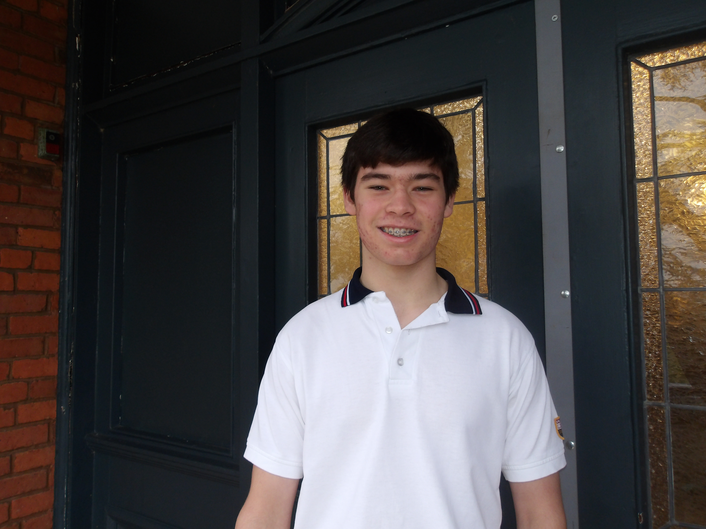

Staff Team
Secretariat
Cindy Chen
Secretary GeneralEthan Curtis
Under Secretary GeneralRegional Council B
Chelsea Lee
Director of Regional Council B
Name of Chair
Chair of Regional Council B
Kieran Mckay
Regional Council B

Kieran Mckay
Regional Council BHOC Staff

Luke Denux
Director of HOCLuke Denux
Chair of HOC
Name of Assistant Director
Assistant Director (A2)
Name of Staff
Staff (S2)Crisis Staff

Bianca Toaxen
Director of CrisisBianca Toaxen
Chair of Crisis CommitteeHaven Miller
Assistant Director of Crisis Committee
Name of Staff
Staff (S3)Regional Council A Staff

Name of Director
Director (D4)Bronwyn Ellis
Chair of Regional Council A
Levi Budd
Assistant Director (A4)Levi Budd
Staff of Regional Council AGeneral Assembly

Name of Director
Director (D5)Josephine Quon
Chair of General AssemblyCrystal Cai
Chair of General Assembly
Leila Mostachfi
Assistant Director of General AssemblyLeila Mostachfi
Staff of General AssemblyKate Han
Staff of General AssemblyPages

Dominic ('Dommy') Ely
Enthusiastic Page
Name of Page
Page (Page2)
Name of Page
Page (Page3)